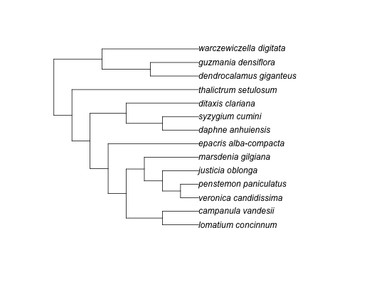
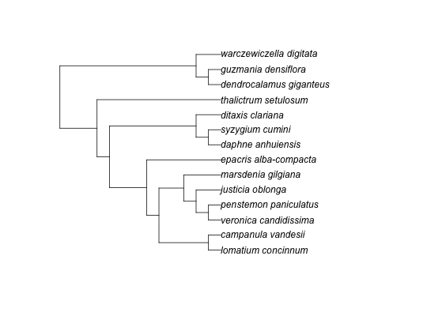

bladj
Bladj take a phylogeny and fixes the root node at a specified age, and fixes other nodes you might have age estimates for. It then sets all other branch lengths by placing the nodes evenly between dated nodes, and between dated nodes and terminals (beginning with the longest 'chains').
ph_bladj(ages, phylo)
Arguments
- ages
- (data.frame/character) ages data.frame, or path to an ages file. required.
- phylo
- (character/phylo) One of: phylogeny as a newick string (will be written to a temp file) - OR path to file with a newick string - OR a an ape `phylo` object. required.
Value
newick string with attributes for where ages and phylo files used are stored
Examples
library(ape) ages_file <- system.file("examples/ages", package = "phylocomr") phylo_file <- system.file("examples/phylo_bladj", package = "phylocomr") # from data.frame ages_df <- data.frame( a = c('malpighiales','salicaceae','fabaceae','rosales','oleaceae', 'gentianales','apocynaceae','rubiaceae'), b = c(81,20,56,76,47,71,18,56) ) phylo_str <- readLines(phylo_file) (res <- ph_bladj(ages = ages_df, phylo = phylo_str))#> [1] "((((((lomatium_concinnum:20.250000,campanula_vandesii:20.250000):20.250000,(((veronica_candidissima:10.125000,penstemon_paniculatus:10.125000)plantaginaceae:10.125000,justicia_oblonga:20.250000):10.125000,marsdenia_gilgiana:30.375000):10.125000):10.125000,epacris_alba-compacta:50.625000)ericales_to_asterales:10.125000,((daphne_anhuiensis:20.250000,syzygium_cumini:20.250000)malvids:20.250000,ditaxis_clariana:40.500000):20.250000):10.125000,thalictrum_setulosum:70.875000)eudicots:10.125000,((dendrocalamus_giganteus:27.000000,guzmania_densiflora:27.000000)poales:27.000000,warczewiczella_digitata:54.000000):27.000000)malpighiales:1.000000;\n" #> attr(,"ages_file") #> [1] "/var/folders/gs/4khph0xs0436gmd2gdnwsg080000gn/T//RtmpHQKtsq/ages" #> attr(,"phylo_file") #> [1] "/var/folders/gs/4khph0xs0436gmd2gdnwsg080000gn/T//RtmpHQKtsq/phylo_12f940db646f"plot(read.tree(text = res))# from files ages_file2 <- file.path(tempdir(), "ages") write.table(ages_df, file = ages_file2, row.names = FALSE, col.names = FALSE, quote = FALSE) phylo_file2 <- tempfile() cat(phylo_str, file = phylo_file2, sep = '\n') (res <- ph_bladj(ages_file2, phylo_file2))#> [1] "((((((lomatium_concinnum:20.250000,campanula_vandesii:20.250000):20.250000,(((veronica_candidissima:10.125000,penstemon_paniculatus:10.125000)plantaginaceae:10.125000,justicia_oblonga:20.250000):10.125000,marsdenia_gilgiana:30.375000):10.125000):10.125000,epacris_alba-compacta:50.625000)ericales_to_asterales:10.125000,((daphne_anhuiensis:20.250000,syzygium_cumini:20.250000)malvids:20.250000,ditaxis_clariana:40.500000):20.250000):10.125000,thalictrum_setulosum:70.875000)eudicots:10.125000,((dendrocalamus_giganteus:27.000000,guzmania_densiflora:27.000000)poales:27.000000,warczewiczella_digitata:54.000000):27.000000)malpighiales:1.000000;\n" #> attr(,"ages_file") #> [1] "/var/folders/gs/4khph0xs0436gmd2gdnwsg080000gn/T//RtmpHQKtsq/ages" #> attr(,"phylo_file") #> [1] "/var/folders/gs/4khph0xs0436gmd2gdnwsg080000gn/T//RtmpHQKtsq/file12f939ed4ad"plot(read.tree(text = res))# using a ape phylo phylogeny object x <- read.tree(text = phylo_str) plot(x)(res <- ph_bladj(ages_file2, x))#> [1] "((((((lomatium_concinnum:20.250000,campanula_vandesii:20.250000):20.250000,(((veronica_candidissima:10.125000,penstemon_paniculatus:10.125000)plantaginaceae:10.125000,justicia_oblonga:20.250000):10.125000,marsdenia_gilgiana:30.375000):10.125000):10.125000,epacris_alba-compacta:50.625000)ericales_to_asterales:10.125000,((daphne_anhuiensis:20.250000,syzygium_cumini:20.250000)malvids:20.250000,ditaxis_clariana:40.500000):20.250000):10.125000,thalictrum_setulosum:70.875000)eudicots:10.125000,((dendrocalamus_giganteus:27.000000,guzmania_densiflora:27.000000)poales:27.000000,warczewiczella_digitata:54.000000):27.000000)malpighiales:1.000000;\n" #> attr(,"ages_file") #> [1] "/var/folders/gs/4khph0xs0436gmd2gdnwsg080000gn/T//RtmpHQKtsq/ages" #> attr(,"phylo_file") #> [1] "/var/folders/gs/4khph0xs0436gmd2gdnwsg080000gn/T//RtmpHQKtsq/phylo_12f9309cabb6"tree <- read.tree(text = res) plot(tree)